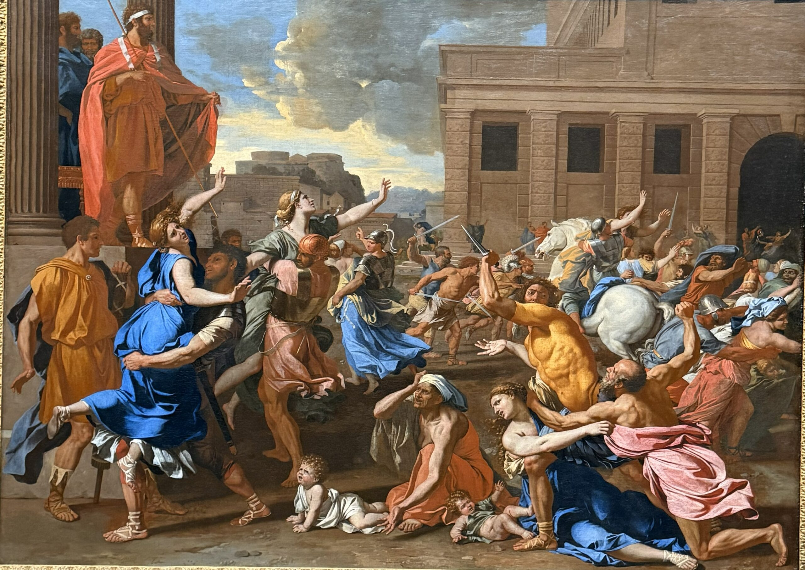
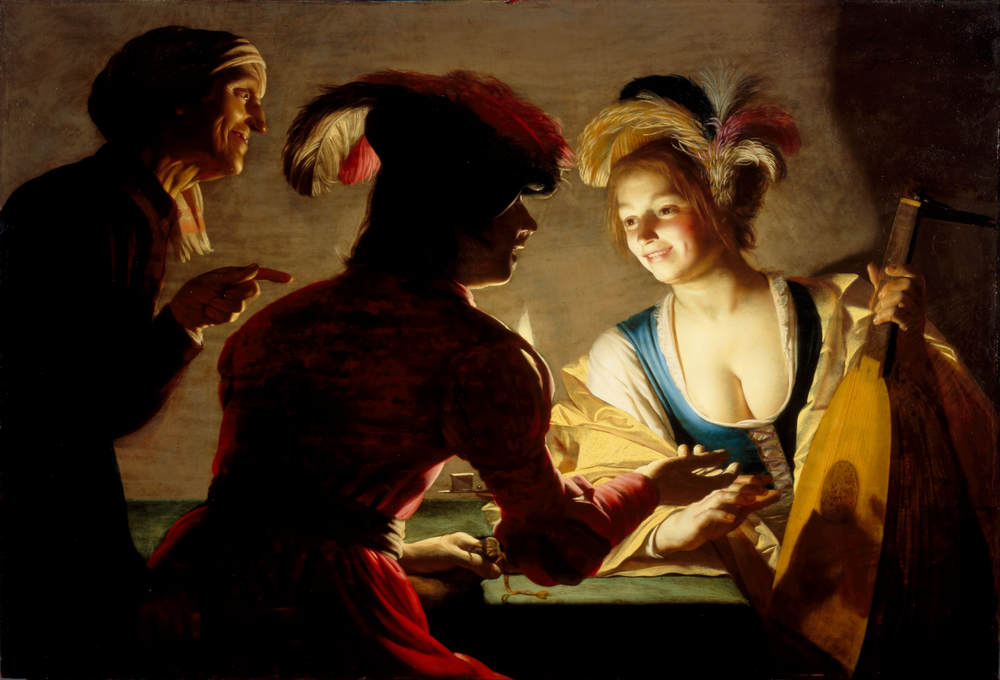
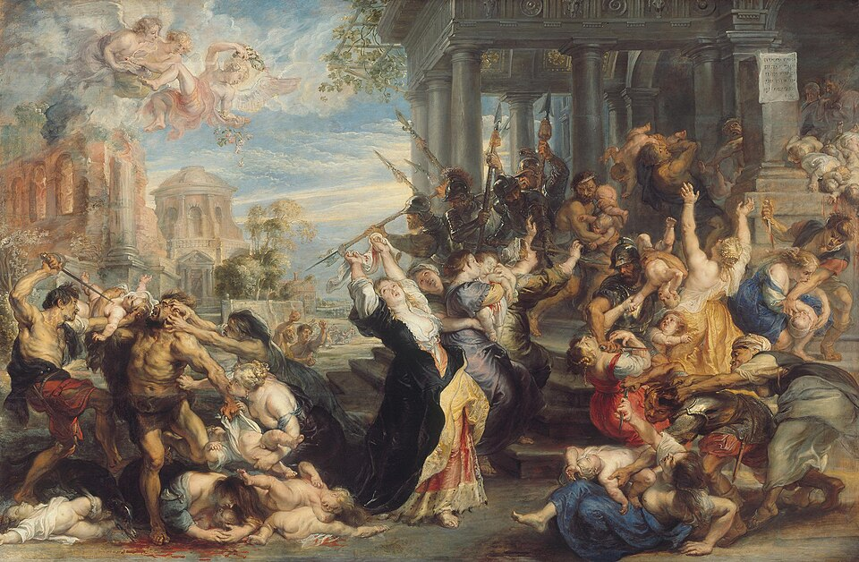
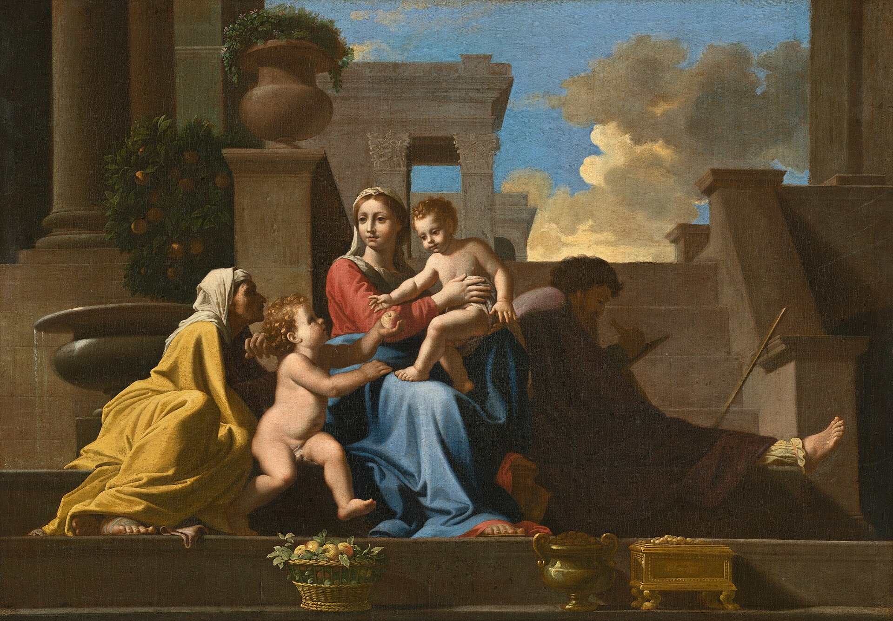

Tunnused ja Kunstnikud
Tunnused
Barokk-kunstis esinevad Erksad värvid, dramaatilised jooned, tekstuurid ning valgus- ja varjundefektide. Kujutised on ka väga realistlikud. Eesmärk oli pakkuda vaatajatele midagi huvitavat, mis suudaks tähelepanu köita. Kunstnikud ja arhitektid eelistasid sooje värve, mis olid kontrastiks kuldsete kaunistuste vastu. Nad kasutasid kolme põhivärvi üksteisele lähedal, mis lõi ilmselge ja dramaatilise tunde. Kuna maalikunstnikud eelistasid tavaliselt religioosseid või klassikalisi stseene, oli paljudel nende töödel selge lugu või sõnum. Nad vastandasid tumedat tausta heledate tegelastega, et luua liikumistunnet ja panna vaataja nägema kavandatud lugu. Samad barokkstiilis omadused rakendati ka tolleaegsetele muusikateostele, millel oli alati publikule lugu või sõnum.

Erksad värvid. Nicolas Poussin,
"Sabiini naiste röövimine"
Valguse ja varju dramaatiline kasutamine. Gerard van Honthorst,
"Kosjasobitaja"
Textuur ja dramaatilised jooned. Jean-Honoré Fragonard,
"Kiik"Kunstnikud
Peter Paul Rubens

Peter Paul Rubens,
"Süütute veresaun"Rembrandt van Rijn

Rembrandt van rijn,
"Öine vahetus"Nicolas Poussin,

Nicolas Poussin
"Püha Perekond trepil"{kind=link}